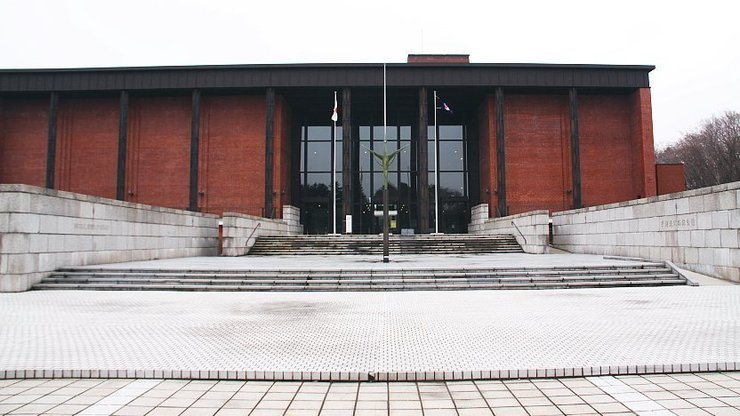

Historic Village of Hokkaido
開拓の村
The Historic Village of Hokkaido (開拓の村, Kaitaku no Mura) is an open air museum in the suburbs of Sapporo. It exhibits about 60 typical buildings from all over Hokkaido, dating from the Meiji and Taisho Periods (1868 to 1926), the era when Hokkaido's development was carried out on a large scale. There are four different sections: a town, fishing village, farm village and a mountain village.
The Hokkaido Museum (北海道博物館, Hokkaido Hakubutsukan) documents the history and nature of Hokkaido and is located about a ten minute walk from the open air museum. The museum focuses on five main themes, including Ainu culture, history and wildlife.
